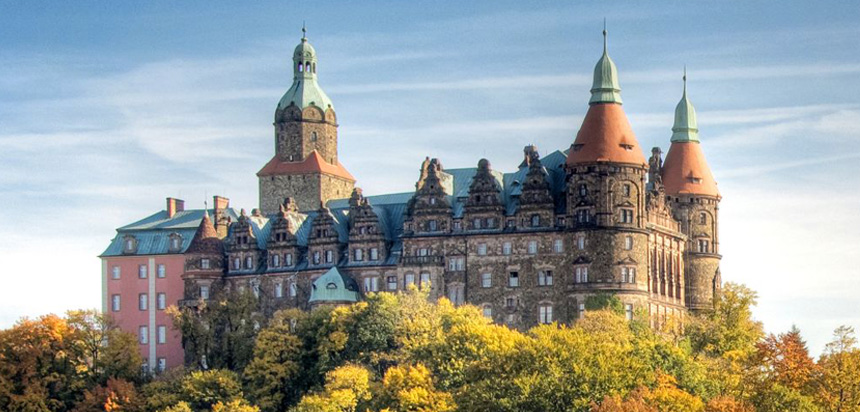

Programy badań strat wojennych
Muzeum Narodowe we Wrocławiu prowadzi badania na temat strat wojennych. W myśl idei kontynuowania gromadzenia, konserwowania, udostępniana i opracowywania naukowego zbiorów muzealnych regionu Muzeum realizuje obecnie dwa projekty dofinansowane ze środków Ministra Kultury i Dziedzictwa Narodowego.
1. Opracowanie archiwalnej dokumentacji dawnych wrocławskich muzeów związanej z dziełami sztuki średniowiecznej na Śląsku
W ramach tego programu Muzeum Narodowe we Wrocławiu w latach 2018–2019 prowadzi kwerendy mające na celu skompletowanie i opracowanie rozproszonej archiwalnej dokumentacji dawnych wrocławskich muzeów oraz służb konserwatorskich związanych z dziełami sztuki średniowiecznej. Badaniami objęta jest związana ze Śląskiem drewniana i kamienna rzeźba romańska i gotycka oraz dzieła malarstwa tablicowego. Podczas prowadzonych badań szczególny nacisk kładziony jest na obiekty utracone.
2. Książ utracony, Książ ocalony – badanie strat wojennych kolekcji sztuki gromadzonej w Zamku Książ w Wałbrzychu
W czasie II wojny światowej w Książu znajdowały się tysiące dzieł sztuki. Były to przedmioty gromadzone od średniowiecza przez kolejne epoki – szczególnie bogato przedstawiały się zbiory barokowe: obrazy, rzeźby, rysunki, grafika etc. Niestety, po 1945 r. Zamek rozgrabiono, a powojenne losy kolekcji Hochbergów nigdy nie zostały dokładnie przebadane. Obecnie te niejednokrotnie bardzo cenne dzieła sztuki i rzemiosła artystycznego rozproszone są nie tylko na terenie Polski, ale również Niemiec, Austrii oraz Rosji i dawnych republik radzieckich.
